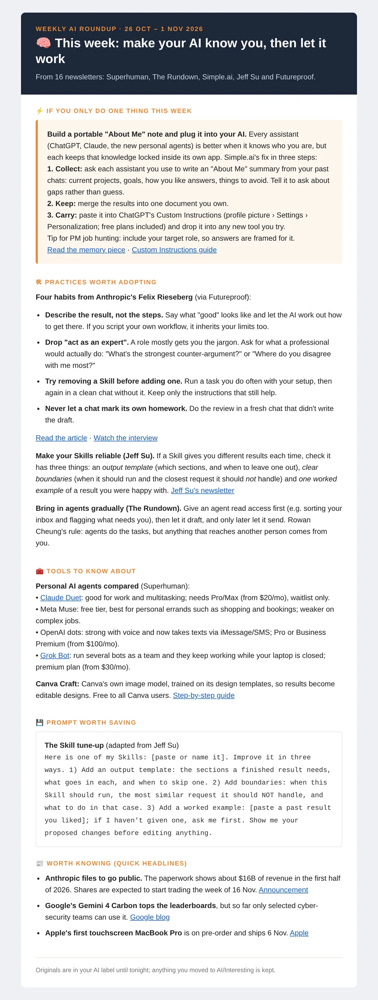

Build · Personal project
My AI roundup: sixteen newsletters, one email
- User
- One: me
- Arrives
- Every Sunday
- Built with
- Claude and Gmail
- Status
- Running weekly
The problem
I started subscribing to AI newsletters and quickly found I was overwhelmed. There are sixteen now, including Superhuman, The Rundown, Simple.ai, Jeff Su and Futureproof. Each one is useful, but together they were a flood, and they were filling an inbox I try to keep as close to zero as possible.
The user
Me again. Specifically, me as someone learning to use AI well and moving into product management. I don't need every story. I need the few things that matter to me this week.
What I built
The newsletters never reach my inbox. A Gmail filter sends them straight to a folder called AI. Every Sunday, Claude reads that week's newsletters and turns them into one email. It always has the same shape:
- If you only do one thing this week: a single, practical action.
- Practices worth adopting: habits and techniques, not news.
- Tools to know about: what's new and who it's for.
- Prompt worth saving: one I can copy and use.
- Worth knowing: a few quick headlines.
If something is worth keeping, I move it to a subfolder called Interesting. Everything else is cleared automatically at the end of the week.
Decisions along the way
- One action, first. The roundup leads with the single thing worth doing, because that's what I'd actually act on.
- Practices before news. Headlines go stale in a week, but a better way of working lasts.
- Shaped for me. It frames tips for someone moving into product management. This week, for example, it suggested adding my target role to the notes I give AI tools.
- Separate roundups, not one big one. When I wanted a product management roundup, with London jobs at my level, I kept it separate from the AI one, and it arrives five minutes later on Sundays. A weekly world news digest followed. Mixing them would have made each one worse.

Building it with Claude
Claude helped me set up the whole thing, from the Gmail filter and folders to the weekly roundup itself. As with my training app, it was a conversation: I explained what I needed, we talked through the options, and I judged the results week by week.
What changed
It saves me time, and I'm more likely to actually read about what's happening in AI, because it arrives as one email I can get through. My inbox is a lot calmer too.